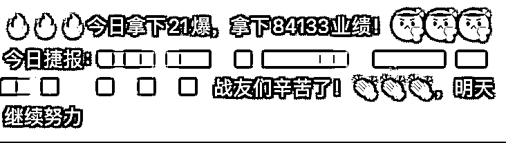

【靠流量变现思维4年做到月营业额200w+的心得】
来源：https://x45ngm9a0z.feishu.cn/docx/KQeud45tLouyrCxSJvIcCOhHnXc
【靠流量变现思维4年做到月营业额200w+的心得】
哈喽，大家好～我是子凡，一个山东的95后短视频从业者，踩准短视频红利从大学毕业一路做到月业绩200w，加入生财一年的时间，参加了行舟老师的抖音老板IP航海，航海结束后汇总了群内成员的问题，结合自己4年的短视频运营思维整理了以下笔记，就在这里给入局抖音后没有方向的同学点帮助，希望给大家带来一些新的思路。
按照「道-法-术-器」的模型，此篇内容主要是围绕着「IP流量变现」“道”的内容。基本涵盖「IP流量变现」从0到1所有认知问题。今后有时间我再给大家整理关于“术”的内容。懂得做事的底层逻辑，那做起事情来讲简单一万倍，了解清楚方向再去努力，方向不对努力全费。
适用对象：
抖音运营小白，完成从0到1的认知框架，有整个体系的支撑，避免弯路。
已经入局抖音的老板，一心停留在“术”的层面，没有大方面的突破


- 这套笔记，可能会改变一些人对于抖音的认知，抖音不是一个平台，抖音是一门生意不要为了做抖音而做抖音，而是要想设计你的生意的完整流程，然后再让抖音成为你的流量放大器！这样的逻辑，才能够真正的实现，从第一个粉丝就开始变现！
抖音心法
- 有的视频第一次发爆，有的第二次爆，如果还不爆，换个账号试一下
- 如果你感觉自己的内容很好，但是数据不好，那就换个账号
- 你会先装修门店再决定卖什么吗？先决定卖什么，再去操作
- 定位：你要做的每一件事，同行都已经给你答案了，去调研分析
个人IP
- 当你有10w粉丝时，用户根本不管你是不是有5w平工厂，是不是行业头部，只靠IP的流量就具备了超额的背书效应
- 炫耀自己的成绩，依然是目前立人设最好的方法，没有之一
- 选题是让系统和人性认定你的视频了，前三秒是系统和人性进一步确认了你的视频。
- 不要碎片化的去做，一定是在某个时问段集中干一件事情，才会有结果
- 正常的文案架构：前缀+造次＋强引导+文案结果+后缀（身份＋价值)
- 做流量，做个人IP，起号做泛粉，在泛粉里筛选精准用户
快速起号
- 你的行业赛道里面找到抖音的蓝海内容，而不是去抄别人的红海内容
- 新模式的方法来打老业态，用创造力的团队去打新的老业态
- 比如，都是创业者，有的刚入行，有的已经被市场教育过，还有的已经有了一定的结果！你到底要的是哪一类人
- 所以虽然定位了行业，定位了内容，但是还要从你想要的精准用户需求出发，他们喜欢听什么，你才讲什么，终极目的是变现
- 根据产品延伸出来很多相关话题，一定要筛选那些可以吸引精准用户，且符合平台规则的话题，作为内容输出和直播内容
- 把同行爆款逻辑总结梳理下来，然后优化，结合，梳理一套属于自己的爆款逻辑
流量变现
- 图片：场景图，朋友圈的核心，不是硬广有多硬，而是软广有多硬
- 目标共识，找到你目标客户的痛点，用你最自信的状态，说最正确的废话，让核心用户持续停留
- 协同算法：你喜欢，和你有相同爱好的人，可能也会喜欢
- 结构：完播引导，爆点前置，反智型，价值后置，揭秘型
短视频平台机制
- 账号到达一定粉丝量之后，粉丝涨不动了，视频流量也不行了
- 去你的对标直播间骗粉，刷一个小时榜一，让对标喊一波关注
核心法法论
- 原动力来源于你必须清楚，做一件事情的时候，清晰的知道自己在做什么事，能赚多少钱。
最后给大家两句自己这四年的感悟。
财富,是抄来的,穷,也是抄来的。一个人赚不到钱,或许你模仿的人本身就不对。
一切从结果上来看，结果以外的东西我都不相信
踩风口比什么都重要，任何一个行业在风口期是有大量的溢价的，这个社会已经给我们论证过了，btc、微商、电商，早期就是捡钱，同样的操作方式，风口大于一切。
做离钱最近的事情。